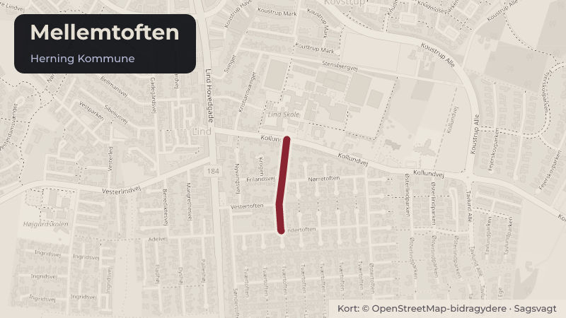

Besluttet 25. august, Herning Byråd, Herning
Frigivelse af anlægsbevilling til nedrivning af Mellemtoften 14, Lind
Byggeri og lokalplanerSkoler og børnBudget og økonomi

Kort fortalt
- Hvem
- Herning Byråd, Herning Kommune
- Hvornår
- Tirsdag 25. august 2026
- Status
- Besluttet. Indstillingen er tiltrådt.
Er noget forkert her? Skriv til os
Læs hele sagen Kommunens egen tekst
Sagsfremstilling
Den tidligere daginstitution Toftegården på Mellemtoften 14 i Lind er lukket og erstattet af
Kastanjegården. Bygningerne på Mellemtoften 14 foreslås derfor nedrevet.
Der anmodes om frigivelse af anlægsbevilling på 2 mio. kr. til nedrivning af den tidligere
daginstitution.
Ved udbud af nedrivningsopgaver stilles der krav om, at alle mursten, der vurderes egnede til
genbrug, skal demonteres skånsomt med henblik på genbrug. Derudover skal
nedrivningsarbejdet gennemføres med fokus på ressourceudnyttelse i overensstemmelse med
principperne for selektiv nedrivning. Det vil være op til den vindende entreprenør, hvordan de
efterfølgende håndterer materialerne.
Kort over området ved Mellemtoften 14 i Lind
Området ved Mellemtoften 14 i Lind planlægges omdannet til boligområde i overensstemmelse
med lokalplan nr. 61.B3.2 for boligområde mellem Søndertoften og Indertoften i Lind.
Lokalplanområdet omfatter også arealet mod vest på Indertoften 9, hvor FDF Lind i dag har
kredshus. FDF planlægger at opføre et nyt kredshus på Tavlundvej. Når dette er gennemført,
kan arealet ved Indertoften 9 byggemodnes til boligformål. Herudover forudsættes det, at det
grønne areal vest for FDF ligeledes indgår i en samlet byggemodning af området.
Da tidsplanen for det nye kredshus ikke er fastlagt, byggemodnes Mellemtoften 14 med
adgang fra Mellemtoften og en midlertidig vendeplads. Boligvejen kan senere forlænges, når
de vestlige arealer inddrages.
På den baggrund indstilles det, at bygningerne på Mellemtoften 14 nedrives.
Økonomi
Udgiften til nedrivning af Mellemtoften 14 udgør 2 mio. kr. Udgift til byggemodning af
arealet i 2027 indgår i arbejdet med investeringsoversigten for 2027-2030 på
Serviceområde 01 Byggemodning.
Indstilling
MILJØ-, INFRASTRUKTUR- OG NATURUDVALGET INDSTILLER,
at der meddeles anlægsudgiftsbevilling samt tilsvarende rådighedsbeløb på 2 mio. kr. i
2026 på Serviceområde 01 Byggemodning, MIN, nyt profitcenter Mellemtoften, Lind
at anlægsudgiften på 2 mio. kr. finansieres af afsat rammerådighedsbeløb på
Serviceområde 01 Byggemodning, profitcenter A250000001 i 2026.
Økonomi-, Erhvervs- og Uddannelsesudvalget anbefaler sagen til Byrådet.
Beslutning
Indstillingen er tiltrådt.
Kilde: Herning Kommune, Herning Byråd, referat fra mødet tirsdag 25. august 2026, punkt 6. Læs den originale sag hos kommunen.
Bydele i sagen: Lind
Steder i sagen: Mellemtoften